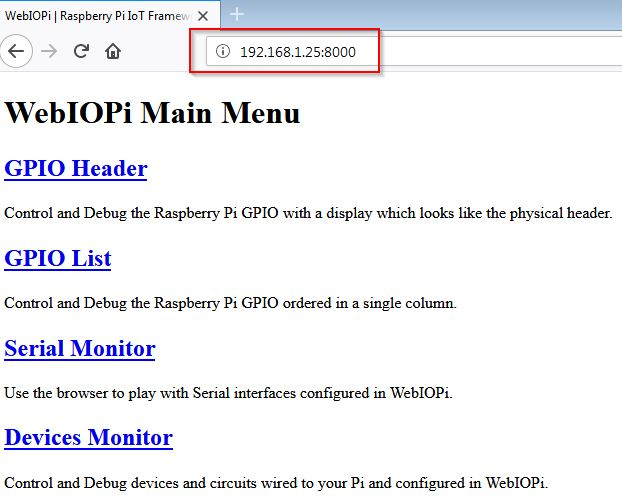
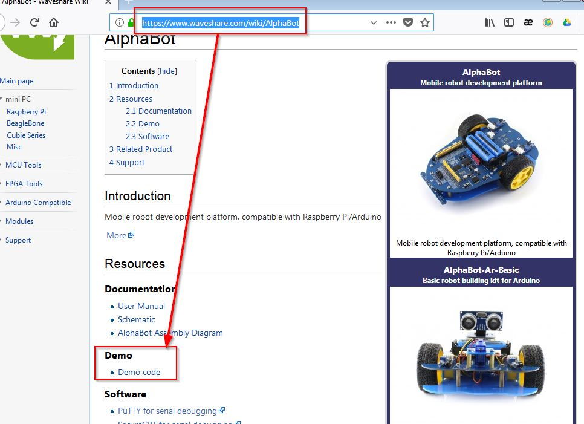
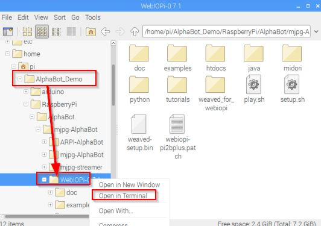

8.3 WebIOPi
No sólo sirve para ver la cámara, sino también permite controlar relés, sensores, mortores.. contectados a los GPIO de la Raspberry y monitorizarlos a través de una página web. Para esto, os recomendamos los ejemplos de la librería Python en /home/pi/webiopi/examples cuando lo tengas instalado.
- El proyecto está respaldado por Google y necesita Raspbian y Python 2.7 o 3.2.
- Actualmente está la versión 0.7.1 luego utilizaremos en este tutorial estos números, pero si ves que a la hora de descargarte el software ha cambiado su versión, cambia pues los números anteriores.
8.3.1 Instalación
8.3.1.1 Opción A instalación desde la página oficial
En su página oficial http://webiopi.trouch.com/ encontrarás tutoriales, instalación, soporte... para su instalación hay que seguir estos pasos:
- Descarga el software http://webiopi.trouch.com/DOWNLOADS.html lo descomprimes y llevas la carpeta a la Raspberry ¿cómo?
- Pues desde la Raspberry navegas, descargas, abres la carpeta de descargas y con el botón derecho descomprimes o abres la terminal con el comando tar xvzf WebIOPi-0.7.1.tar.gz.
- Otra opción más sencilla es descargarlo desde tu ordenador principal, descomprimirlo y copiar la carpeta a la Raspberry, ya sabes cómo o ¿es que no te has leído esto?
- Abre la carpeta en terminal (si estas en un entorno gráfico, con el botón derecho, abrir en terminal, si estás en un entorno texto SSH con cd WebIOPi-0.7.1) y ejecutamos la instrucción sudo ./setup.sh
8.3.1.2 Opción B Instalación desde comandos
Abrimos un terminal SSH (ya lo hemos visto cómo se hace) y tecleamos los siguientes comandos (en la penúltima instrucción ten paciencia, tarda un rato en ejecutar el parche) :
cd /home/pi
sudo wget http://sourceforge.net/projects/webiopi/files/WebIOPi-0.7.1.tar.gz
sudo tar xvzf WebIOPi-0.7.1.tar.gz
cd WebIOPi-0.7.1
sudo wget https://raw.githubusercontent.com/doublebind/raspi/master/webiopi-pi2bplus.patch
patch -i webiopi-pi2bplus.patchsudo ./setup.sh
8.3.2 Arrancar el servicio WebIOPi.
Puedes arrancar y parar el servicio WebIOPi con los comandos:
sudo /etc/init.d/webiopi start
sudo /etc/init.d/webiopi stop
Pero recomendamos configurarlo para que se inicie automáticamente durante el arranque con el comando:
sudo update-rc.d webiopi defaults
Para anulara la anterior instrucción (o sea que WebIOPi NO se inicie automáticamente):
sudo update-rc.d webiopi remove
Acceso
Entra en un navegador de tu ordenador y teclea la IP de tu Raspberry y añade :8000, por ejemplo, si la raspberry tiene la dirección 195.168.1.25 entra en http://192.168.1.25:8000
Ya sabes la IP de tu Raspberry, es la que configurastes en interfaces, lo vimos aquí
ATENCIÓN El usuario es webiopi y la contraseña raspberry. Para cambiar la clave hay que teclear:
sudo webiopi-passwd
Te pedirá el usuario: webiopi y la nueva contraseña dos veces, luego hay que reiniciar:
sudo /etc/init.d/webiopi restart
Y si queremos que no pida clave, simplemente borrar el contenido del archivo /etc/webiopi/passwd

Si entras en GIPIO Header verás que puedes configurar los puertos GPIO.
Instalación desde la página web de Alphabot
En la página https://www.waveshare.com/wiki/AlphaBot tienes Software demo y también el software WepIOPi y MJPEG-Streamer:

Se descargará un fichero comprimido que lo podemos descomprimir en la Raspberry y entrar en el directorio donde esta WebIOPi, abrimos una terminal en esa carpeta con el botón derecho:

Y tecleamos:
sudo ./setup.sh

Alphabot por varios autores bajo licencia Creative Commons Reconocimiento-NoComercial-CompartirIgual 4.0 Internacional License.